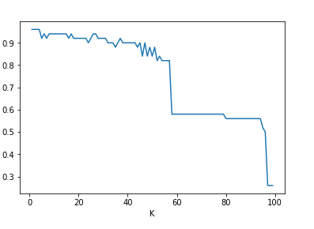

Material
K-Mean
K-Means merupakan salah satu algoritma Clustering dimana dalam proses pengelompokan datanya dibagi dalam beberapa kelompok sehingga data dalam satu kelompok/cluster memiliki kemiripan yang maksimum dan sebaliknya data dengan antar kelompok memiliki tingkat kemiripan minimum.
Salah satu metode yang dapat digunakan untuk membagi sejumlah objek ke dalam partisi-partisi berdasarkan kategori-kategori yang ada dengan melihat titik tengah yang diberikan. Peng-cluster-an objek dilihat dari jarak objek dengan titik tengah yang paling dekat. Setelah mengetahui titik tengah terdekat, objek tersebut akan diklasifikasikan sebagai anggota dari kategori tersebut.
Tahap-tahap menghitung K-Mean:
-
Menentukan secara acak K sebagai pusat cluster(centroid)
-
Menghitung jarak antar data ke masing-masing centroid(pusat cluster)
-
Mengelompokkan setiap data ke dalam cluster tertentu berdasarkan jarak terdekat
-
Menentukan centroid baru berdasarkan nilai rata-rata dari anggota cluster
-
Menghitung kembali jarak antar data ke masing-masing centroid baru
-
Mengelompokkan kembali setiap data ke cluster tertentu
Nb : bila anggota setiap cluster tidak berpindah tempat maka data tersebut sudah tepat pengelompokannya, bila masih berpindah maka ulangi langkah 2 sampai seterusnya
contoh perhitungan K Mean pada data berikut :


Koefisien silhouette digunakan untuk membandingkan efektifitas masing-masing algoritma klastering
cara penghitungan dengan koefisien silhooutte :
-
menentukan anggota cluster
-
Menghitung nilai silhoutte setiap cluster( untuk menghitung nilai koefisien silhoute mencari nilai rata-rata dari setiap objek)
rumus silhoutte : s(i)= 1-(a(i)/b(i))
a(i) = Jarak objek dengan cluster yang sama
b(i) = nilai minimum dari rata-rata jarak objek


Nilai hasil silhouette coefficient terletak pada kisaran nilai -1 hingga 1. Semakin nilai silhouette coefficient mendekati nilai 1, maka semakin baik pengelompokan data dalam satu cluster. Sebaliknya jika silhouette coefficient mendekati nilai -1, maka semakin buruk pengelompokan data didalam satu cluster.
K-NN (K-Nearest Neighbour)
K-Nearest Neighbor atau yang sering disingkat dengan KNN adalah salah satu algoritma yang digunakan untuk melakukan klasifikasi terhadap objek berdasarkan dari data pembelajaran (data training) yang jaraknya paling dekat dengan objek tersebut.
Tujuan dari algoritma KNN adalah mengklasifikasikan objek baru berdasarkan atribut dan sampel-sampel dari data training.

Diberikan titik uji, akan ditemukan sejumlah K objek (titik training) yang paling dekat dengan titik uji. Klasifikasi menggunakan voting terbanyak di antara klasifikasi dari K objek. Algoritma K-NN menggunakan klasifikasi ketetanggaan sebagai nilai prediksi dari sample uji yang baru. Dekat atau jauhnya tetangga biasanya dihitung berdasarkan jarak Eucledian.
Tahapan Algoritma Perhitungan KNN
- Menentukan parameter K sebagai banyaknya jumlah tetangga terdekat dengan objek baru.
- Menghitung jarak antar objek/data baru terhadap semua objek/data yang telah di training. (
menggunakan Euclidean Distance.)
- Mengurutkan hasil perhitungan tersebut beradasarkan nilai yang paling tinggi ke rendah.
- Tentukan tetangga terdekat berdasarkan jarak minimum ke K.
- Tentukan kategori dari tetangga terdekat dengan objek/data.
- Gunakan kategori mayoritas sebagai klasifikasi objek/data baru.
Disini saya akan memberikan contoh menghitung knn dengan menggunakan data bunga Iris menggunakan pyton.
Berikut codingannya:
-
Import datasets dan Libraries¶
```python
from sklearn import datasets import pandas as pd
```
from sklearn.linear_model import logistic_regression_path
iris=datasets.load_iris()
print(iris.data) print(iris.target)
```
##### Preprocessing
```python from sklearn.model_selection import train_test_split x_train, x_test, y_train, y_test=train_test_split(iris.data,iris.target,test_size=0.33)
from sklearn.neighbors import KNeighborsClassifier clf=KNeighborsClassifier(n_neighbors=3).fit(x_train,y_train)
from sklearn.metrics import accuracy_score print("accuracy is ") print(accuracy_score(y_test,clf.predict(x_test)))
import matplotlib.pyplot as plt
accuracy_values=[]
for x in range(1,x_train.shape[0]): clf=KNeighborsClassifier(n_neighbors=x).fit(x_train,y_train) accuracy=accuracy_score(y_test,clf.predict(x_test)) accuracy_values.append([x,accuracy]) pass
##### Import Libraries
```python
import numpy as np
accuracy_values=np.array(accuracy_values)accuracy data¶
python
plt.plot(accuracy_values[:,0],accuracy_values[:,1])
plt.xlabel("K")
plt.ylabel("accuracy")
plt.show()

Kelebihan dan kekurangan K-NN:
Kelebihan :
· Lebih efektif di data training yang besar
· Dapat menghasilkan data yang lebih akurat
Kekurangan :
· Perlu ditentukan nilai k yang paling optimal yang menyatakan jumlah tetangga terdekat
· Biaya komputasi cukup tinggi karena perhitungan jarak harus dilakukan pada setiap query instance bersama-sama dengan seluruh instan dari training sample
##### Referensi
https://id.wikipedia.org/wiki/KNN
<https://id.wikipedia.org/wiki/K-means
http://depandienda.it.student.pens.ac.id/file/knn_references.pdf
https://informatikalogi.com/algoritma-k-nn-k-nearest-neighbor/